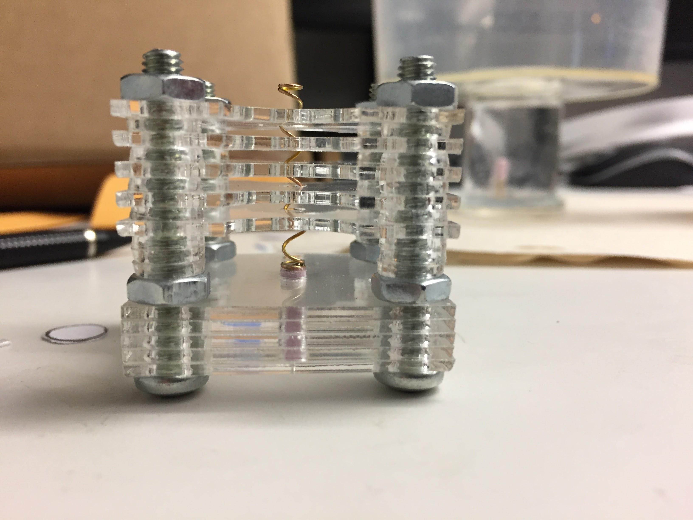

Scaled Magnetic Helical Swimmers

At the Telerobotics Laboratory, I designed and fabricated scaled, magnetic helical swimmers. Each swimmer has an embedded magnet that enables it to be actuated with a rotating uniform magnetic field generated by a tri-axial Helmholtz coil system. I wrote C++ code and modified an existing library for the coils to sweep through rotating frequencies in order to control these swimmers.
Swimmer heads machined from foam.
Swimmers assembled in custom jig.